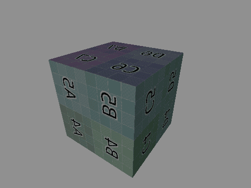
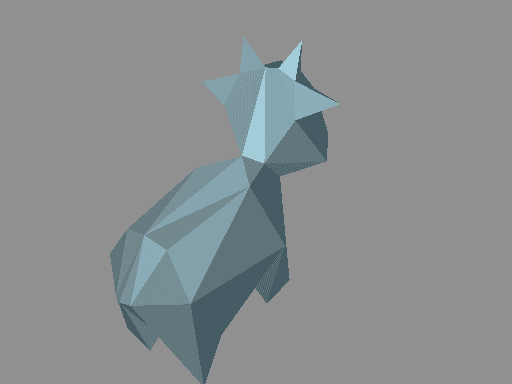
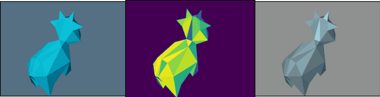

可微渲染实验3：可微光栅化渲染器综合实现
本系列实验是笔者参与2023腾讯游戏课题的一部分，代码已开源。
实验背景
渲染流程中存在许多参数。游戏开发流程中，将渲染结果调节至与原画美术风格或参考结果一致的过程，需要大量技术美术人员的工作。例如：
- 给定一个现实中的材质球的照片，或离线渲染的参考结果，如何调节渲染中材质的各项参数，使得游戏中的实时渲染结果与这些参考最接近？
- 对于图像后处理任务，给定美术色调风格，如何调节色调映射和白平衡等过程中的各项参数，使得生成图像与美术参考最接近？
- 再如，给定高端机型上的参考结果，如何优化低端机型上低端光照模型的参数，使得渲染结果与参考最接近？
这些问题长久以来依赖人工手动调参，是时候将这个过程自动化了。
果然，又到可微渲染发挥作用的时候了。本实验中，我们将实现一个可微光栅化渲染器，并且至少支持以下特性：
- glTF 模型导入
- 纹理贴图导入和采样
- 点光源照明
- PBR 着色
不过，传统的三角形光栅化是一个不可微的过程，因为它通过离散采样（如 z-buffering）确定像素归属，导致梯度无法传播到被遮挡的三角形。好在可微的三角形光栅化已经有很多研究成果，比如经典的 Soft Rasterizer: A Differentiable Renderer for Image-based 3D Reasoning。本实验将基于该论文，在 Slang 上通过计算着色器实现可微光栅化算法。
SoftRas 可微光栅化算法
在实验 2 中，其实我们已经实现了一个简化的该算法的版本，而在本实验中，我们将完整实现它。这里简单介绍一下论文中的算法，更详细的分析请直接参考论文。
给定 \(n\) 个像素点和 \(m\) 个屏幕空间三角形，SoftRas 光栅化将传统基于深度的离散采样转换为概率过程：
- 所有三角形对每个像素均有贡献，而非仅最近三角形；
- 像素 \(i\) 到三角形 \(j\) 的平面距离（不考虑深度）决定了 \(j\) 对 \(i\) 的影响；
- 最终像素 \(i\) 的颜色，由点与三角形的深度差和各三角形的影响共同贡献。
具体地，三角形 \(j\) 对像素 \(i\) 的影响可定义为
\[ \mathcal{D}_j^i = \text{sigmoid}\left(\frac{\delta_j^i \cdot d^2(i,j)}{\sigma}\right) \]
其中：
- \(\delta_j^i\) 为距离符号，与 SDF 距离符号恰好相反：若其为 \(-1\)，则 \(i\) 位于三角形 \(j\) 外部，否则位于 \(j\) 边缘或内部
- \(d(i, j)\) 为 \(i\) 到三角形 \(j\) 的平面距离
- \(\sigma > 0\) 控制锐度，若 \(\sigma \to 0\)，则光栅化将呈现出硬边；当 \(\sigma\) 为不小的正数时，光栅化的边缘会变得模糊
我们综合考虑三角形 \(j\) 在像素 \(i\) 的深度，决定颜色影响程度。深度通过重心坐标插值得到，并采用归一化逆深度（近大远小）表示为 \(z_j^i\)。具体地，三角形 \(j\) 对像素 \(i\) 的颜色贡献为
\[ w_j^i = \frac{\mathcal{D}_j^i \exp(z_j^i/\gamma)}{\sum_k \mathcal{D}_k^i \exp(z_k^i/\gamma) + \exp(\epsilon/\gamma)} \]
可见，该计算基于 Softmax 函数。其中：
- \(\epsilon > 0\) 用于让背景色也具有权重
- \(\gamma > 0\) 控制权重分布的平滑性，当 \(\gamma \to 0\) 时，等价于只有像素 \(i\) 附近的三角形才能参与颜色贡献，即呈现出较合理的光栅化效果
综合得到，最终颜色为该像素在各三角形下，在指定光照模型下的着色 \(c_j^i\) 与背景颜色 \(c_b\) 的加权和
\[ c^i = \sum_j w_j^i c_j^i + w_b^i c_b. \]
算法实现小贴士
从以上算法可以看出，实现我们的软件光栅化过程时，需要对每个像素遍历所有三角形，时间复杂度为
\(O(nm)\)。即便在着色器中可以以像素数级别并行，写出
\(O(m)\) 的代码，但在着色器中写一个
for 循环总是不太优雅。而且，在 Slang 中为存在
for
循环的函数自动微分时，需要显式指定其最大迭代次数，以帮助编译器自动针对可微变量生成反向传播函数。当这一最大迭代次数很大时（面数
\(m\)
总是会很大），编译器可能会生成参数不合法的 CUDA 代码，使得反向传播时出现
CUDA 运行时报错问题。
或者，我们可以计算手动微分，这也是原论文的做法。这时，我们需要手动实现后向传播的导数。在
Slang 中，可以使用 [BackwardDerivative(aggregate_bwd)]
声明颜色累积过程 aggregate 的后向传播导数
aggregate_bwd，并实现之。
还有一个性能更佳的方法，是在每个像素的软件光栅化过程中再次调用一个三角形数级别并行的
kernel，并结合着色结果对 \(c^i\) 做
atomicAdd。不过这可能需要更细致的并行程序设计。
无论通过什么方法实现可微光栅化和反向传播过程，实验结果都应该是类似的。初次尝试时，可以先简单尝试
for 循环的方法，再考虑其他实现。
实验目的
本实验中，我们将在综合实现一个可微光栅化渲染器，支持上述特性，并可指定优化参数，包括光照参数、几何参数和着色器参数等。
P.S. 对于那些不需要优化的参数，如 uv 纹理采样坐标，我们可以指定其为
no_diff减轻编译压力。如果为过多变量指定可微，编译时间可能会非常长，且编译器可能报错。
实验过程
实现 glTF 模型导入
我们可以使用 Python 库 gltflib 和 trimesh 实现模型导入和三角化处理。
详细的实现过程不是本实验的重点，不再赘述。
实现 PBR 着色和纹理采样
实现它们的过程与普通渲染器没有区别。有了 Slang 语言特性加持，我们可以轻松实现 shader 模块化管理和面向对象的程序设计。
如果希望优化纹理贴图，那么我们需要自己实现一个可微的纹理采样函数，可直接照搬实验 1 我们已经实现的那个。
实现可微光栅化
这是实验中最有挑战的部分。具体而言，我们需要对每个像素，遍历所有三角形：
- 将三角形投影到屏幕空间
- 如果三角形距离像素足够近：
- 计算颜色累积贡献
softmax_max并累加softmax_sum - 根据 PBR 着色模型，采样纹理贴图，计算光照，计算当前像素在该三角形的颜色
- 累加加权颜色
- 计算颜色累积贡献
在计算的最后，还需要将像素颜色除以
softmax_sum。随后可进行各类后处理，如 gamma
校正。详细的代码可参考开源仓库中
shaders\soft_ras\main.slang 的实现。
实现 Python 前端
经过前两个实验，我们应该已经很熟悉 Python 前端的训练循环如何编写了。
实验结果
首先我们用一个带有纹理的方块模型，测试渲染器前向渲染的能力：

可见，前向渲染应当是没有问题，左前方的光照也正常点亮了一个面。
我们可以开始实验渲染器优化参数的能力。这次我们选择在同一模型，同一相机和同一光照，但不同固有色的设置下，模型的
metallic 参数。具体而言，我们的目标是一个减面后的 spot
模型：

它的参数配置如下：
1 | target_diffuse = [0.4, 0.8, 1.0] |
我们需要优化的 spot 模型的初始参数配置如下：
1 | diffuse = [0.0, 0.5, 1.0] |
我们将不优化 diffuse 参数，看看仅仅在优化
metallic 的情况下，渲染结果将会有多接近目标结果。
训练过程可视化（GIF）如下：

其中，左图为待优化模型的渲染结果，中图为损失函数 \(L = \text{avg}((T - O_i)^2)\)
的梯度可视化结果，右图为目标渲染结果。注意上图中的训练过程中，同时也优化了背景颜色
bg_color。训练过程中，牛牛的金属化总体上越来越明显，符合预期。
最后收敛的结果是 metallic = 0.560，这是一个与目标
0.75 不接近的值，但却是在 diffuse
无法被优化时的最优解。可见，可微渲染确实可以发现一些“光照模型的奥秘”。
由于笔者忙碌，本系列实验到此就告一段落了。虽然本系列实验整体上是玩具级别的小打小闹，不过整体思想和技术原理与实际项目中使用的别无二致，应当能成为一定的参考。
总之，在当下和未来，可微渲染将是游戏资产工业化管线重要的支撑技术，研究其技术原理对引擎、图形开发和技术美术人员的能力扩充大有裨益。未来，可以展望其与神经网络有机结合，带来更多生产力的提高。